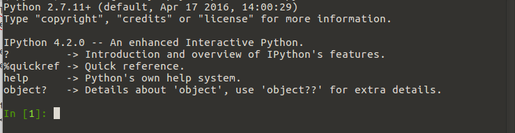
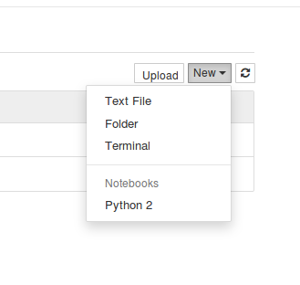
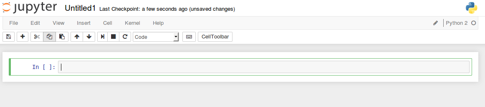
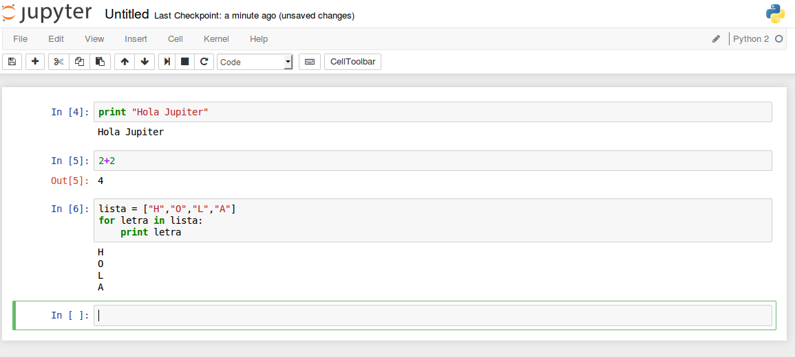
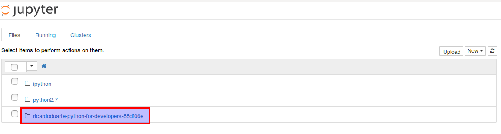
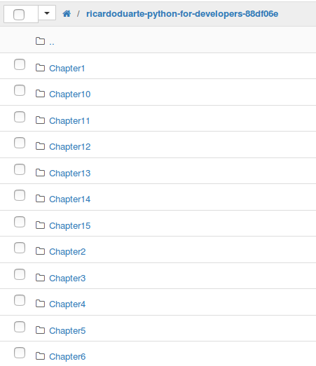
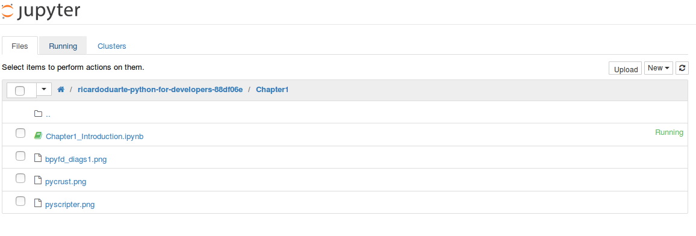
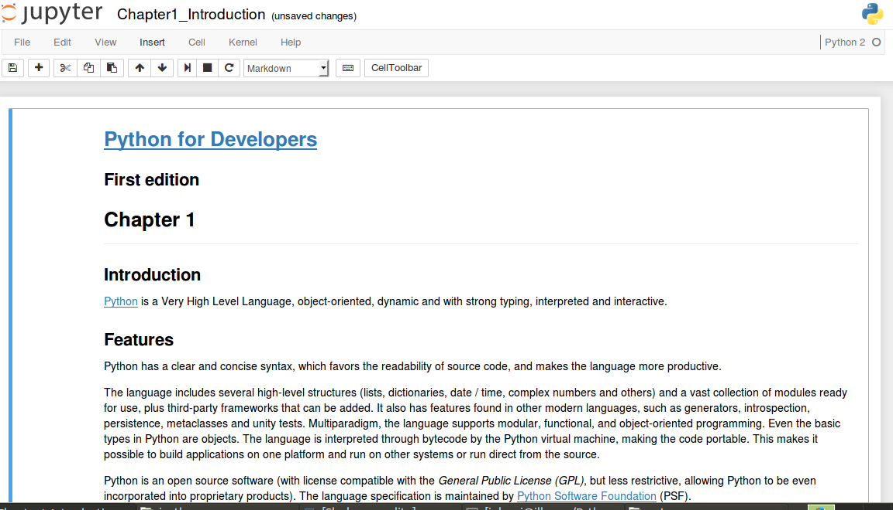

IPython y Jupyter
Despues de un receso hemos regresado y esta vez para hablar de IPython y Jupyter, como todos sabemos cuando estamos aprendiendo Python utilizamos el interprete directamente desde una terminal y vamos probando nuestros programas, al principio todo nos va muy bien pero luego notamos que nos vamos quedando cortos, es alli donde aparece IPython que tal como nos dice su pagina web nos provee una arquitectura rica para computación interactiva con:
- Una shell interactiva poderosa.
- Un nucleo para Jupyter.
- Soporte para visualización de datos interactivos y uso de herramientas GUI.
- Interprete embebido flexible para cargar en nuestros propios proyectos.
- Fácil de usar, herramientas de alta performance para computación paralela.
Vamos a instalarlo para ir conociendolo mejor, para ello vamos a crear un entorno virtual, al que llamaremos ipython:
virtualenv ipython
Lo activamos:
source ipython/bin/activate
Ahora procedemos a instalar ipython:
pip install ipython
Para probar que todo ha salido bien ponemos lo siguiente en la terminal:
ipython
Y nos aparecerá algo como esto, que nos indica que todo esta funcionando correctamente:
Escribimos exit para salir del interprete y regresar a nuestra terminal:
exit
Ahora conozcamos a Jupyter, tal como nos dice su pagina web, es una aplicación web que permite crear y compartir documentos que contienen código vivo, ecuaciones, visualizaciones y texto explicativo. Se puede usar para simulación numérica, simulación estadística, machine learning y mucho mas. Vamos a instalarlo para ir conociéndolo:
pip install jupyter
Para correrlo debemos escribir lo siguiente:
ipython notebook
Y automáticamente nos abrirá en una pestaña del navegador lo siguiente:

Aqui podemos crear un nuevo notebook, dando click al boton new en la parte superior derecha y seleccionando Python 2:
Nos aparece una especie de consola web donde podemos ir escribiendo nuestros programas:
Y ejecutando su contenido, como si trabajáramos en nuestra vieja terminal:
Maravilloso verdad, un interprete web, donde vamos escribiendo nuestros programas y viendo su funcionamiento, agregando texto, imagenes, generando graficos, podemos guardar cada noteboook, exportarlo a pdf, intercambiarlo, etc, como veran es una herramienta valiosisima para utilizar en la enseñanza, en el analisis de datos, en los trabajos de investigacion, etc.
En la red podemos encontrar una gran de cantidad de notebooks listos para descargar, hay tutoriales, tesis, trabajos de investigacion, etc. A nosotros nos intereso el siguiente curso, que es introductorio al leguaje Python: Python For Developers
Vamos a descargar el archivo zip conteniendo todos los notebooks y lo guardamos en la ruta desde donde ejecutamos el comando “ipython notebook”, lo descomprimimos y tendremos lo siguiente:
Como verán ahora ya nos aparece la carpeta donde esta el curso, ingresamos a ella:
Ahora ingresamos a uno de los capítulos:
Seleccionamos el archivo con la extensión “ipynb” y veremos un hermoso curso de introduccion a Python donde podemos ir interactuando con los programas de ejemplo:
Genial no, ahora aprender Python y hacer demostraciones de código va a ser mas divertido :-)
Eso es todo por hoy, saludos.